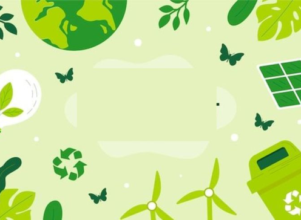

Sustainability: Konsep dan Implikasinya bagi Lingkungan, Ekonomi, dan Sosial
Sustainability menekankan pengelolaan sumber daya secara bertanggung jawab guna memastikan kelestarian dan efisiensi jangka panjang. Hal ini meliputi penggunaan sumber daya secara bijaksana, perlindungan terhadap kualitas lingkungan saat ini, serta pemenuhan kebutuhan generasi mendatang tanpa mengorbankan keberlanjutan untuk generasi masa depan (Gürses et al., 2021).
Prinsip-Prinsip Sustainability
Prinsip Sustainability tidak hanya terbatas pada pemeliharaan sumber daya alam tetapi juga melibatkan stabilitas kualitas lingkungan dan keberlanjutan dari segi ekonomi dan sosial. Untuk itu, keberadaan sumber daya dan pelestarian kualitas lingkungan merupakan dua hal yang fundamental dalam mencapai Sustainability (Lee, 2013). Secara umum, Sustainability menjadi elemen penting bagi keberlangsungan masa depan, terutama dalam tiga aspek utama berikut:
Dampak Lingkungan: Sustainability menjadi sangat penting dalam mengurangi efek negatif dari proses produksi konvensional yang bergantung pada bahan bakar fosil. Sumber daya ini terbatas dan penggunaannya menghasilkan limbah yang berbahaya bagi lingkungan. Oleh karena itu, pendekatan berkelanjutan dapat membantu memitigasi dampak lingkungan ini (Gürses et al., 2021).
Manfaat Ekonomi: Di sisi lain, Sustainability juga menawarkan manfaat ekonomi yang signifikan, termasuk penghematan energi dan sumber daya, insentif finansial, serta peningkatan daya saing perusahaan. Dengan implementasi Sustainability, perusahaan dapat menciptakan efisiensi dalam operasional, mengurangi biaya, dan sekaligus meraih keuntungan kompetitif jangka panjang (Marchi, 2022).
Sustainability juga memainkan peran penting dalam tanggung jawab sosial. Konsep ini mencakup pemenuhan kebutuhan saat ini tanpa mengorbankan kemampuan generasi mendatang untuk memenuhi kebutuhan mereka sendiri (Borgaonkar & Marhaba, 2021; Johnston, 2023). Selain itu, Sustainability menekankan tanggung jawab individu dan organisasi dalam menjaga keseimbangan sosial serta mendukung pengembangan yang holistik dan berkelanjutan (Mulej & Hrast, 2023).
Dampak Lingkungan dari Sustainability Salah satu dimensi utama Sustainability adalah dampaknya terhadap lingkungan. Proses pengelolaan sumber daya alam secara berkelanjutan bertujuan untuk menjaga keseimbangan ekosistem dan meminimalkan kerusakan lingkungan. Pengelolaan ini dilakukan melalui eksploitasi sumber daya yang bertanggung jawab, pengembangan teknologi ramah lingkungan, serta perubahan kelembagaan yang mendukung (Boroushaki et al., 2021).Penggunaan bahan bakar fosil yang tidak berkelanjutan menyebabkan kerusakan lingkungan yang serius, termasuk emisi karbon dan pencemaran udara. Oleh karena itu, penting untuk mengadopsi pendekatan yang lebih berkelanjutan guna mengurangi dampak buruk ini. Pengembangan energi terbarukan, seperti tenaga surya dan angin, menjadi salah satu langkah penting dalam mengurangi ketergantungan pada bahan bakar fosil (Gürses et al., 2021).
Selain itu, Sustainability juga mendorong investasi yang lebih tepat sasaran ke arah teknologi hijau dan infrastruktur ramah lingkungan, yang pada akhirnya akan membantu memperbaiki kualitas lingkungan dan meminimalkan risiko kerusakan lingkungan yang lebih besar di masa depan (Boroushaki et al., 2021).

Manfaat Ekonomi dari Sustainability
Sustainability bukan hanya tentang lingkungan, tetapi juga menawarkan keuntungan ekonomi yang signifikan. Implementasi praktik-praktik berkelanjutan dapat menghasilkan penghematan yang substansial dalam penggunaan energi dan sumber daya. Selain itu, perusahaan yang berkomitmen pada Sustainability cenderung mendapatkan insentif fiskal dari pemerintah dan menarik perhatian konsumen yang semakin peduli terhadap isu lingkungan (Marchi, 2022).
Praktik-praktik berkelanjutan juga memberikan keunggulan kompetitif yang lebih besar bagi perusahaan. Perusahaan yang mampu mengadopsi model bisnis berkelanjutan sering kali meraih margin keuntungan yang lebih tinggi, meningkatkan produktivitas, dan memperkuat hubungan dengan pelanggan. Hal ini karena konsumen cenderung lebih memilih produk yang diproduksi secara berkelanjutan (Langenwalter, 2007).
Dalam jangka panjang, implementasi Sustainability dalam operasi bisnis dapat menciptakan keunggulan yang bertahan lama. Selain itu, Sustainability membantu perusahaan untuk lebih tangguh menghadapi tantangan ekonomi global seperti fluktuasi harga energi dan perubahan regulasi lingkungan (Marchi, 2022).
Implikasi Sosial dari Sustainability
Sustainability juga memiliki dimensi sosial yang tidak kalah penting. Pemenuhan kebutuhan saat ini harus dilakukan dengan cara yang tidak mengorbankan kemampuan generasi mendatang untuk memenuhi kebutuhan mereka sendiri. Oleh karena itu, Sustainability memiliki implikasi besar terhadap kesejahteraan sosial, termasuk peningkatan kualitas hidup dan pencapaian keadilan sosial (Borgaonkar & Marhaba, 2021; Johnston, 2023).
Selain itu, Sustainability erat kaitannya dengan tanggung jawab sosial perusahaan. Perusahaan tidak hanya bertanggung jawab terhadap keuntungan finansial, tetapi juga terhadap dampak sosial dan lingkungan dari aktivitas bisnis mereka. Sustainability menekankan pentingnya hubungan interdependensi antara manusia dan lingkungan sekitar, serta peran holistik yang dimainkan oleh perusahaan dalam mendukung pembangunan berkelanjutan (Mulej & Hrast, 2023).
Kesimpulan
Sustainability merupakan konsep yang penting dalam mengatasi tantangan lingkungan, mencapai manfaat ekonomi, dan memenuhi tanggung jawab sosial. Dengan memperhatikan keterkaitan antara aspek lingkungan, ekonomi, dan sosial, Sustainability menekankan pentingnya pengelolaan sumber daya yang bertanggung jawab, penerapan praktik bisnis yang menguntungkan, dan kesejahteraan sosial. Dalam menghadapi perubahan iklim global dan meningkatnya tekanan pada sumber daya alam, Sustainability menjadi kunci untuk mewujudkan masa depan yang lebih baik bagi semua lapisan masyarakat.
Sumber :